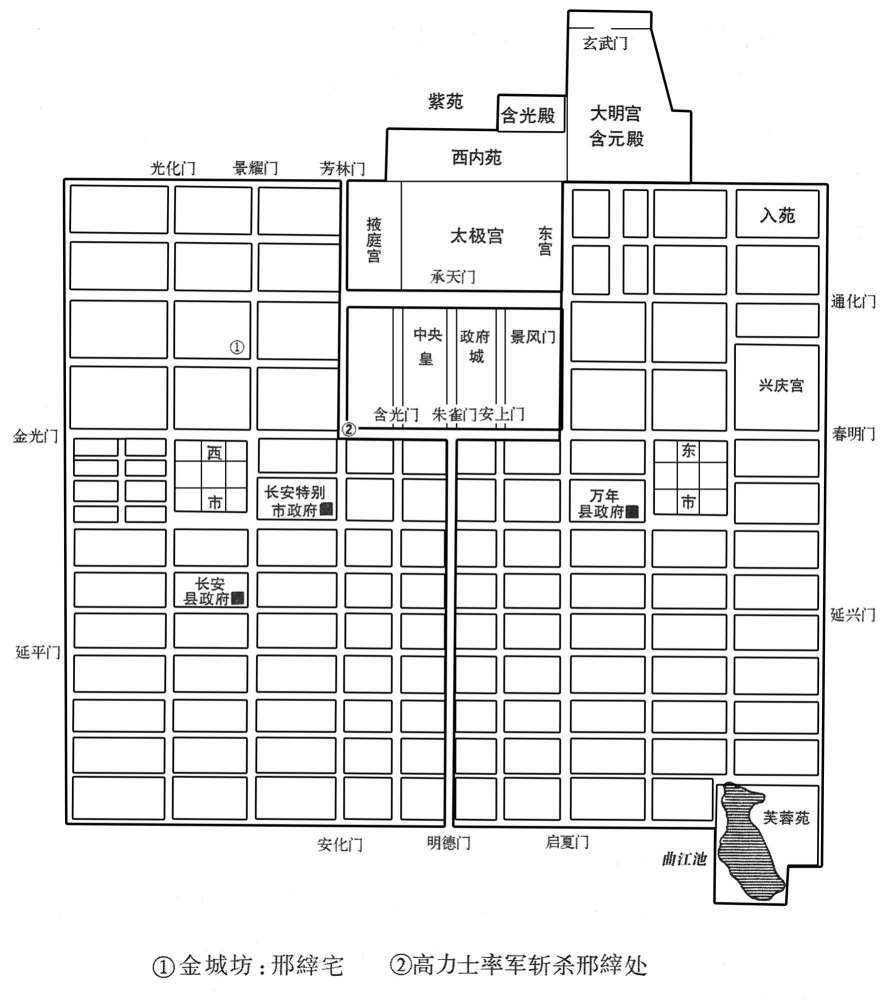

公元752年资治通鉴：本年记事、原文与白话对照
按原书编年位置阅读；追叙和史论不等于本年发生的事件。白话采用所据译本，缺译不以生成译文补齐。
卷216 · 本年记事
公元752年 · 唐玄宗至道大圣大明孝皇帝天宝十一年
十一年〔（壬辰，七五二）〕
上传原文的注释括号有异常，字符原样保留；无法可靠划分的段落默认全文显示。
本年事件索引（现代整理）
- 玄宗自华清宫还宫
- 官府以粮帛换取恶钱缓解币制混乱
- 阿布思率同罗部叛逃漠北
- 吏、兵、刑部改称文、武、宪部
- 王鉷兼领二十余使权势日盛
- 王准挟势欺压驸马王繇
- 王焊杀害术士及韦会
- 邢縡谋乱被告发后伏诛
- 王鉷因谋逆案赐死，党羽遭诛流
- 安思顺接任朔方节度使
- 庆王李琮卒，追赠靖德太子
- 杨国忠接掌王鉷所领京畿诸使
- 杨国忠借邢縡案疏远李林甫
- 剑南军击败援助南诏的吐蕃军
- 玄宗再观左藏并厚赏群臣
- 阿布思袭扰永清栅被击退
- 玄宗幸华清宫
- 通训门因凤瑞改名凤集门
- 李林甫卒，玄宗许诺杨国忠入相
- 司马光论李林甫专宠误国
- 杨国忠任右相兼文部尚书
- 杨国忠独揽政务并领四十余使
- 张彖以冰山讥喻杨国忠权势
- 杨国忠任命崔圆掌剑南并安插吉温
- 杨国忠以按资注官收揽人心
- 史思明兼任卢龙军使
- 玄宗自华清宫还宫
- 封常清任安西四镇节度使
- 哥舒翰与安禄山因族属互相讥辱
- 李琰因厌胜符咒案被囚而忧愤卒
- 杨国忠在私第预定吏部选官名单

本年形势与背景参考图
春，正月，丁亥，上还宫。
本段缺少可靠对应白话，原文完整保留；未使用生成译文。
二月，庚午，命有司出粟帛及库钱数十万缗于两市易恶钱。〔考异曰；旧纪、唐历皆作「癸酉」，今从实录。〕先是，江、淮多恶钱，贵戚大商往往以良钱一易恶钱五，载入长穴，市井不胜其弊，〔先，悉荐翻。胜，音升。〕故李林甫奏请禁之，官为易取，期一月，不输官者罪之。于是商贾嚣然，不以为便。〔贾，音古。嚣，许骄翻，又五刀翻。〕众共遮杨国忠马自言，国忠为之言于上，乃更命非铅锡所铸及穿穴者，皆听用之如故。〔〔于伪翻。更，工衡翻。〕
本段缺少可靠对应白话，原文完整保留；未使用生成译文。
三月，安禄山发蕃、汉步骑二十万击契丹，欲以雪去秋之耻。初，突厥阿布思来降，〔事见上卷元年。降，户江翻。〕上厚礼之，赐姓名李献忠，累迁朔方节度副使，赐爵奉信王。献忠有才略，不为安禄山下，禄山恨之；至是，奏请献忠帅同罗数万骑，与俱击契丹。〔帅，读曰率；下同。〕献忠恐为禄山所害，白留后张暐，请奏留不行暐不许。〔安禄山领河东而张暐为留后，暐知附禄山而已，安肯为阿布思请哉！〕献忠乃帅所部大掠仓库，叛归漠北，禄山遂顿兵不进
本段缺少可靠对应白话，原文完整保留；未使用生成译文。
乙巳，改吏部为文部，兵部为武部，列部为宪部。
本段缺少可靠对应白话，原文完整保留；未使用生成译文。
户部侍郎、御史大夫、京兆尹王鉷，权宠日盛，领二十余使。宅旁为使院，文案盈积，吏求署一字，累日不得前；中使赐赉不绝于门，〔使，疏吏翻。赉，来代翻。〕虽李林甫亦畏避之。林甫子岫为将作监，鉷子准为卫尉少卿，俱供奉禁中。准陵侮岫，岫常下之。〔下遐嫁翻。〕然鉷事林甫谨，林甫虽忌其庞，不忍害也。
本段缺少可靠对应白话，原文完整保留；未使用生成译文。
准尝帅其徒过驸马都尉王繇，〔王繇，同皎之子也。帅，读曰率。过，工禾翻。〕繇望尘拜伏；准挟弹命中于繇冠，折其玉簪，以为戏笑〔弹，徒旦翻。命中者，先命其处而后中之。中，竹仲翻。折，而设翻。〕既而繇延准置酒；繇所尚永穆公主，上之爱女也，黄琮曰：皇女有美名公主，或以德，或以容，或以福寿，设名最多；又有郡公主、小国、中国等。〕为准亲执刀匕。〔刀匕，宰夫之职。记，杜蒉曰：「蒉也宰夫也，惟刀匕是共。」为，于伪翻；下同。〕准去，或谓繇曰：「鼠虽挟其父势，〔称为鼠，微之也。〕君乃使公主为之具食〔为，于伪翻。〕有如上闻，无乃非宜﹖」繇曰：「上虽怒无害，至于七郎，〔王鉷，第七。〕死生所系，不敢不尔。」
本段缺少可靠对应白话，原文完整保留；未使用生成译文。
鉷弟户部郎中焊，凶险不法，〔焊，何旦翻。〕召术士任海川〔任，音壬，姓也。〕问「我有王者之相否﹖」〔相，悉亮翻。〕海川惧，亡匿。鉷恐事泄，捕得，托以他事杖杀之。王府司马韦会，定安公主之子，王繇之同产也，〔定安公主，中宗女，下嫁王同皎，生繇；又嫁韦濯，生会。〕话之私庭。鉷使长安尉贾季邻收会系狱，缢杀之。〔缢，于计翻。〕繇不敢言。
本段缺少可靠对应白话，原文完整保留；未使用生成译文。
焊所善邢縡，〔縡，作代翻。〕与龙武万骑谋杀龙武将军，以其兵作乱，杀李林甫、陈希烈、杨国忠；前期二日，有告之者。夏，四月，乙酉，上临朝，〔朝，直遥翻。〕以告状面授鉷，使捕之。鉷意焊在縡所，先使人召之，日晏，乃命贾季邻等捕縡。縡居金城坊，〔金城坊，朱雀街西第四街之北来第二坊，汉顾成庙、博望苑、戾园皆在焉。〕季邻等至门，縡帅其党数十人持弓刀格鬬突出。〔帅，读曰率。〕鉷与杨国忠引兵继至，縡党曰：「勿伤大夫人。」〔言勿伤鉷所部人也。大夫，称鉷之官。〕国忠之傔密谓国忠曰：「贼有号，不可战也。」〔今人谓私记为号，言贼私为记号以相识别。傔，苦念翻。〕縡鬬且走，至皇城西南隅。〔京城之内有皇城，皇城之内有宫城。〕会高力士引飞龙禁军四百至，〔飞龙禁军，乘飞龙厩马者也。武后置仗内六闲，一曰飞龙，以中官为内飞龙使〕击斩縡，捕其党，皆擒之。
本段缺少可靠对应白话，原文完整保留；未使用生成译文。
国忠以状白上，曰：「鉷必预谋。」上以鉷任遇深，不应同逆；李林甫亦为之辩解。〔为，于伪翻。〕上乃特命原焊不问，然意欲鉷表请罪之；使国忠讽之，鉷不忍，上怒。会陈希烈极言鉷大逆当诛，戊子，敕希烈与国忠鞫之，仍以国忠兼京兆尹。于是任海川，韦会等事皆发，狱具，鉷赐自尽，焊杖死于朝堂，〔朝，直遥翻。〕鉷子准、偁流岭南，〔偁，齿绳翻。〕寻杀之。有司籍其第舍，数日不能偏。鉷宾佐莫敢窥其门，独采访判官裴冕收其尸葬之。〔王鉷盖兼京畿采访使。〕
本段缺少可靠对应白话，原文完整保留；未使用生成译文。
初，李林甫以陈希烈易制，引为相，〔事见上卷五载。易，以豉翻。〕政事常随林甫左右，晚节遂与林甫为敌，林甫惧。会李献忠叛，林甫乃请解朔方节制，且荐河西节度使安思顺自代庚子，以思顺为朔方节度使。〔使，疏吏翻。〕
本段缺少可靠对应白话，原文完整保留；未使用生成译文。
五月，戊申，庆王琮薨，赠靖德太子。〔琮，徂宗翻。「赠」字之下逸「谥」字。既曰赠矣，无「谥」字亦可。
本段缺少可靠对应白话，原文完整保留；未使用生成译文。
丙辰，京兆尹杨国忠加御史大夫、京畿。关内采访等使，凡王佅所绾使务，悉归国忠〔佅，户公翻。使，疏吏翻。〕
本段缺少可靠对应白话，原文完整保留；未使用生成译文。
初，李林甫以国忠微才，且贵妃之族，故善遇之。国忠与王鉷俱为中丞，鉷用林甫荐为大夫，故国忠不悦，遂深探邢縡狱，〔探，吐南翻。縡，作代翻。〕令引林甫交私鉷兄弟及阿布思事状，〔令，力丁翻。〕陈希烈、哥舒翰从而证之；上由是疏林甫。国忠贵震天下，始与林甫为仇敌矣。
本段缺少可靠对应白话，原文完整保留；未使用生成译文。
六月，甲子，杨国忠奏吐蕃兵六十万救南诏，〔吐，从暾入声。〕剑南兵击破之于云南，克故隰州等三城，〔考异曰：实录：「兵部侍郎兼御史中丞、剑南节度使杨国忠破吐蕃于云南，拔故隰州等三城，献俘于朝。」唐历：「国忠上言破吐蕃于云南，拔故洪州等三城。」按国忠时在长安，盖剑南破吐蕃，以国忠领节鄅，故使之上表献俘耳。时国忠已为大夫，云中丞，误也。隰州，从实录。〕捕虏六千三百，以道远，简壮者千余人及酋长降者献之。〔酋，慈由翻。长，知两翻。降，户江翻。〕
本段缺少可靠对应白话，原文完整保留；未使用生成译文。
秋，八月，乙〔「章：十二行本作「己」，乙十一行本同；孔本同，张校同。」〕丑，上复幸左藏，赐群臣帛。〔蜀本作「己丑」，当从之。八载已尝幸左藏，赐群臣帛矣，故此书复。复，扶又翻。藏，徂浪翻。〕癸巳，杨国忠奏有凤皇见左藏库屋，出纳判官魏仲犀言凤集库西通训门。〔左藏，旧有令、丞而已，出纳判官盖帝置也。是时分立诸使，旧来司存之官备员，莫得举其职。杨国忠方承恩遇，领使最多，盖兼领左藏出纳使而以魏仲犀为判官也。宋白曰：天宝二年，始命张瑄充太府出纳使。阁本太极宫图，左藏库之西则通训门。见，贤遍翻。〕
本段缺少可靠对应白话，原文完整保留；未使用生成译文。
九月，阿布思入寇，围永清栅，〔永清栅，亦曰永济栅，在中受降城之西二百里大同川。〕栅使张元轨拒却之。〔使，疏吏翻。〕
本段缺少可靠对应白话，原文完整保留；未使用生成译文。
冬，十月戊寅，上幸华清宫。
本段缺少可靠对应白话，原文完整保留；未使用生成译文。
己亥，改通训门曰凤集门；魏仲犀迁殿中侍御史，杨国忠属吏率以凤皇优得调。〔调，徒钓翻。〕
本段缺少可靠对应白话，原文完整保留；未使用生成译文。
南诏数寇边，蜀人请杨国忠赴镇；〔去年杨国忠领剑南；蜀人困于兵，故请之。数，所角翻。〕左仆射兼右相李林甫奏遣之。国忠将行，泣辞，上言必为林甫所害，贵妃亦为之请。上谓国忠曰：「卿蹔到蜀区处军事，朕屈指待卿，还当入相。」〔屈指计日以待之。亦为，于伪翻。处，昌吕翻。相，息亮翻。〕林甫时已有疾，忧懑不知所为，〔懑，莫困翻，又莫缓翻，中烦也。〕巫言一见上可小愈；上欲就视之，左右固谏。上乃令林甫出庭中，〔林甫时盖卧疾昭应私第。〕上登降圣阁遥望，〔天宝七载十二月，以玄元皇帝见于朝元阁，改为降圣阁，在华清宫中。〕以红巾招之。〔今富贵之家，帨巾率以臙脂染之为真红色，唐之遗俗也。〕林甫不能拜，使人代拜。国忠比至蜀，〔比，必利翻，及也。〕上遣中使召还，〔中使，疏吏翻。〕至昭应，谒林甫，拜于床下。林甫流涕谓曰：「林甫死矣，公必为相，以后事累公！」〔累，力瑞翻。〕国忠谢不敢当，汗出覆面。〔国忠素惮林甫，故然。覆，敷又翻。〕十一月，丁卯，林甫薨。
本段缺少可靠对应白话，原文完整保留；未使用生成译文。
上晚年自恃承平，以为天下无复可忧，复，扶又翻。〕遂深居禁中，专以声色自娱，悉委政事于林甫。林甫媚事左右，迎合上意，以固其宠；杜绝言路，掩蔽聪明，以成甚奸；妬贤疾能，排抑胜己，以保其位；屡起大狱，诛逐贵臣，以张其势。〔张，知亮翻。〕自皇太子以下，畏之侧足。凡在相位十九年，〔开元二十二年始相林甫，至是年凡十九年。〕养成天下之乱，而上不之寤也。
本段缺少可靠对应白话，原文完整保留；未使用生成译文。
庚申，以杨国忠为右相，兼文部尚书，〔右相，即中书令；文部，即吏部。〕其判使并如故。〔判，如判度支之类；使，谓诸使。使，疏吏翻。〕
本段缺少可靠对应白话，原文完整保留；未使用生成译文。
国忠为人强辩而轻躁，无威仪。既为相，以天下为己任，裁决机务，果敢不疑；居朝廷，攘袂扼腕，〔躁，则到翻。相息亮翻。朝直遥翻。腕乌贯翻。〕公卿以下，颐指气使，莫不震慑。〔慑之涉翻。〕自侍御史至为相，〔杨国忠兼侍御史，在六载、七载之间。〕凡领四十余使。〔杨国忠为度支郎，领五十余使，至宰相，凡领四十余使，新、旧唐史皆不详载其职。按其拜相制前衔云：御史大夫、判度支、权知太府卿事，兼蜀郡长史、剑南节度，支度，营田等副大使、本道兼山南西道采访处置使、两京太府、司农、出纳、监仓、祀祭、木炭、宫市、长春，九成宫等使、关内道及京畿采访处置使，拜右相，兼吏部尚书、集贤殿，崇玄馆学士、修国史、太清，太微宫使；自余所领，又有管当租庸、铸钱等使。以是观之，概可见。〕台省官有才行时名，〔行，下孟翻。〕不为己用者，皆出之。
本段缺少可靠对应白话，原文完整保留；未使用生成译文。
或劝陕郡进士张彖谒国忠，〔陕郡本陕州弘农郡，天宝元年更郡名。陕，失冉翻。〕曰：「见之，富贵立可图。」彖曰：「君辈倚杨右相如泰山，吾以为冰山耳！若皎日既出，君辈得无失所恃乎！」遂隐居嵩山。
本段缺少可靠对应白话，原文完整保留；未使用生成译文。
国忠以司勋员外郎崔圆为剑南留后，征魏郡太守吉温为御史中丞，充京畿、关内采访等使。〔魏郡，魏州。京畿、关内先置两采访使，今令温兼充。〕温诣范阳辞安禄山，〔魏郡属河北道采访使；时禄山兼采访使，故温往辞。〕禄山令其子庆绪送至境，为温控马出驿数十步。〔为，于伪翻。〕温至长安，凡朝廷动静，辄报禄山，信宿而达。
本段缺少可靠对应白话，原文完整保留；未使用生成译文。
十二月，杨国忠欲收人望，建议：「文部选人，无问贤不肖，选深者留之，依资据阙注官。」〔选，须绢翻。考异曰：唐历此敕在十月二十七日，统纪在七月。旧纪：「十二月甲戌，国忠奏请两京选人铨日便定留放，无长名。」按国忠作相，始兼文部尚书，七月未也。今从旧纪。〕滞淹者翕然称之。国忠凡所施置，皆曲徇人所欲，故颇得众誉。
本段缺少可靠对应白话，原文完整保留；未使用生成译文。
甲申，以平卢兵马使史思明兼北平太守，充卢龙军使。〔使，疏吏翻。〕
本段缺少可靠对应白话，原文完整保留；未使用生成译文。
丁亥，上还宫。〔还自华清宫。考异曰：本纪、唐历皆云「己亥还京」，今从实录。〕
本段缺少可靠对应白话，原文完整保留；未使用生成译文。
丁酉，以安西行军司马封常清为安西四镇节度使。〔唐制，行军司马位节度副使之上，天宝以后，节镇以为储帅。〕
本段缺少可靠对应白话，原文完整保留；未使用生成译文。
哥舒翰素与安禄山、安思顺不协，上常和解之，使为兄弟。是冬，三人俱入朝，〔朝，直遥翻。〕上使高力士宴之于城东。禄山谓翰曰：「我父胡，母突厥，公父突厥，母胡，族类颇同，何得不相亲﹖」翰曰：「古人云，狐向窟嗥不祥，为其忘本故也。〔厥，九勿翻。窟，苦骨翻。嗥，户刀翻。为，于伪翻。〕兄苟见亲，翰敢不尽心！禄山以为讥其胡也，大怒，骂翰曰：「突厥敢尔！」翰欲应之，力士目翰，翰乃止，阳醉而散，自是为怨愈深。
本段缺少可靠对应白话，原文完整保留；未使用生成译文。
隶王琰有二孺人，争宠，〔曲礼，大夫之妃曰孺人。注云，孺之言属。正义曰：孺，属也，言其为亲属。唐制县王有孺人二人，视正五品。孺，而树翻。〕其一使巫书符置琰履中以求媚。琰与监院宦者有隙，〔时诸皇子列宅禁中之北，宦者监之。监，古衔翻。〕宦者知之，密奏琰祝诅上；上使人掩其履而获之，大怒。琰顿首谢：「臣实不知有符。」上使鞫之，果孺人所为。上犹疑琰知之，囚于鹰狗坊，〔鹰狗坊属闲貛使。〕绝朝请，〔朝，直遥翻。忧愤而薨。
本段缺少可靠对应白话，原文完整保留；未使用生成译文。
故事，兵、吏部尚书知政事者，〔知政事，即宰相之职。〕选事悉委侍郎以下，〔选，须绢翻。〕三注三唱，仍过门下省审，自春及夏，其事乃毕。〔唐制，六品以下赴选，始集而试，观其书判；已试而铨，察其身言；巳铨而注，询其便利而拟；巳注而唱，不厌者，得反通其辞；三唱而不厌者，听冬集。厌者为甲，上于仆射，乃上门下省，给事中读之，黄门侍郎省之，侍中审之，然后以闻。主者受旨而奉行焉，谓之奏受。省，悉景翻。〕及杨国忠以宰相领文部尚书，欲自示精敏，乃遣令史先于私第密定名阙。
本段缺少可靠对应白话，原文完整保留；未使用生成译文。